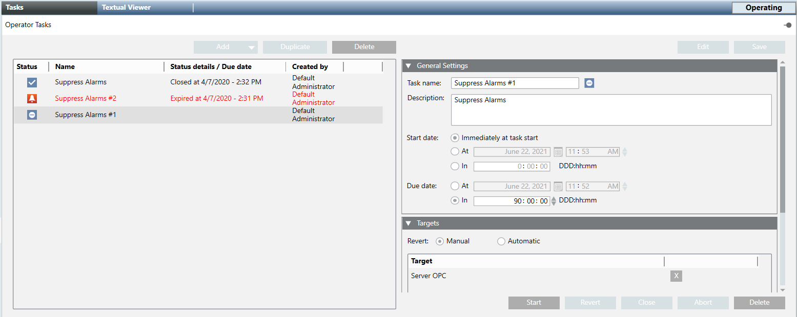
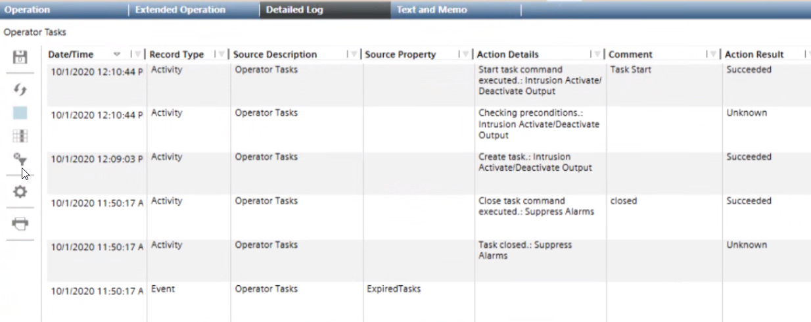

Handling Operator Tasks
This section provides instructions for handling existing operator tasks in Desigo CC, for example to start, cancel, or revert a task.
For instructions on how to create or modify an operator task, see Setting Up Operator Tasks.

Prerequisites
- Appropriate application rights for Operator Tasks were set.
- You have appropriate user authorizations to work with the tasks and command their target objects.
- System Browser is in Application View.
Check the List of Operator Tasks
You can monitor the currently configured operator tasks in the Tasks tab.
- In System Browser, select Applications > Operator Tasks.
- The Tasks tab lists all the existing operator tasks, each with its status and other information. For full details about the meaning of task statuses, see Tasks List and Statuses.
- Check for tasks that require attention, these are highlighted in red. In particular:
-
Expired: The task ended (due date reached) but without the expected outcomes of its commands. See Handle an expired task. -
Ready to be closed: The task ended with the expected outcomes. See Close an Operator Task. - Tasks available for starting are those in the following statuses:
-
IdleorFailed. See Start an Operator Task. - To help you find tasks in the list you can:
- Sort by a specific column: Click a header to sort by that column. An arrow indicates the sort order. Click the same header again to switch between ascending / descending sort order.
- Rearrange columns: Drag-and-drop the headers to the desired position.
Start an Operator Task
- A task can be started if its status is
IdleorFailed.
NOTE: For full details about the meaning of task statuses, see Tasks List and Statuses.
- In System Browser, select Applications > Operator Tasks.
- In the Tasks tab, select the desired task.
- Click Start.
- If the status changes to
Idle, the task could not be executed because you do not have authorization rights to execute its commands. - If a message indicates you that the task requires a manual revert as soon as it completes, click Yes to run the task with manual revert, or click No to not execute the task.
- If a message indicates you lack the authorization for automatic revert on a task, click Yes to run the task anyway with forced manual revert, or click No to not execute the task.
- If the Operator Tasks dialog box displays, enter your comment, and click OK.
For example, alarms disabled on the third floor from 3pm to 5pm because of a check on the fire system. - After clicking Start, a typical sequence of statuses in a normal task execution may include:
-
Deferred: The task will begin at the time or after the delay configured in Start at. -
Executing commands: The commands in the task are being issued. -
RunningorRunning with exceptions: All or some of the commands were issued successfully. The task remains in this status until the Due date is reached. -
Ready to be closed. The Due date was reached and the conditions resulting from execution of the task commands were met. - An event is generated in Event List if the tasks status is
Deferred,Running, orReady to be closed(see Operator Tasks Reminders in Event List).
In each case, the event is automatically cleared from Event List when the task status changes. - When the task due date is reached, depending on configuration the commanded objects are set back to their former state automatically, or you may be able to manually send a Revert command (see Revert an Operator Task).
NOTE 1: When the task status is Deferred or Executing commands, the Due date that is displayed is only an estimated value that might change dynamically until the task status becomes Running.
NOTE 2: If there was a problem executing the task, the relevant event is generated in Event List (see Operator Tasks Reminders in Event List), and one of the following statuses will result:
-
Failed: All the task commands were issued with errors. The task will not start. -
Expired. The Due date was reached but conditions resulting from execution of the task commands were not met.
In the Targets expander, the Result column shows you the details of command execution on each target object. For details, see Command Result Icons.
Revert an Operator Task
Reverting a task sets all the commanded objects back to their former state. For example, if an operator task set a fire panel to Test Mode, reverting will set the panel back to Normal Mode.
- If a task is configured with automatic revert, the revert command will be automatically sent when the task due date is reached.
- If a task is configured with manual revert option, a Revert command becomes available that you can manually send.
- The task has reverting actions (manual or automatic).
- The task status is one of the following:
-Running(orRunning with exceptions)
-Failed
-Expired
- In System Browser, select Applications > Operator Tasks.
- In the Tasks tab, select the task that you want to revert.
- Click Revert and confirm.
- If the Operator Tasks dialog box displays, enter your comment, and click OK.
- After clicking Revert, the status changes to:
-
Reverting Commands: commands are being executed to set the properties back to their original state. - The system checks the conditions resulting from execution of the revert commands. Based on the outcome of this, the task status becomes:
-
Ready to be closed(all the conditions are met). See Close an Operator Task. -
Expired(at least one condition is not met). See Handle an Expired Task.
Close an Operator Task
Closing a task enables you to subsequently delete it, or duplicate it to run it again.
- You can close a task when its status is:
-Running(orRunning with exceptions)
-Failed
-Expired
-Ready to be closed
- In System Browser, select Applications > Operator Tasks.
- In the Tasks tab, select the task that you want to close.
- Click Close.
- If the Operator Tasks dialog box displays, enter your comment, and click OK.
Handle an Expired Task
When the task status is Expired it means that the task ended (due date reached) without the expected outcomes of its commands being achieved.
- In System Browser, select Applications > Operator Tasks.
- In the Tasks tab, select the expired task.
- (Optional) In the Targets expander, check the Result column for details about the command execution on each target object.
- You can try again to send the commands in one of the following ways:
- Manually satisfy the conditions by executing the commands from the Operation tab.
- Modify the task Due date: this will cause the task to restart. See Adjust the Due Date of a Task.
- Otherwise, click Close. (Consequently, the task status becomes
Closed).
Abort an Operator Task
Aborting interrupts a previously started task and stops the commands from being sent.
- You can abort a task when its status is:
-Deferred
-Executing commands
-Reverting commands
- In System Browser, select Applications > Operator Tasks.
- In the Tasks tab, select the task that you want to interrupt.
- If the Operator Tasks dialog box displays, enter your comment, and click OK.
- Click Abort and confirm.
- The task status becomes
Failed.
View the Operator Task Notes or Details from Previous Execution
- In System Browser, select Applications > Operator Tasks.
- Select the Detailed Log tab.
- Click Select columns
 .
. - In the Select Columns dialog box, set and sort the appropriate filters to view operator tasks notes and details. For example:
- Date/Time
(Date and time when an action occurred in the system) - Record Type
(ActivityorEvent) - Source Description
(Source of the action. In this case,Operator Tasks.) - Source Property
(For example,ExpiredTasks) - Action Details
(Description of the task action executed. For example,Task closed.:Suppress Alarms.) - Comment
(Any comment entered when performing certain operations on tasks.)
NOTE: The operator tasks notes can be viewed in the Notes expander of the Tasks tab: this contains a maximum of ten notes. You can view more notes in the Comment column that displays all the tasks notes retrieved from the database. The history log clearly indicates if a revert action will be executed automatically (using the username of the operator who started the task). For more information, see Tasks Notes and Validation. - Action result
(For example,Succeeded) - Click OK.
- Click Refresh
 to retrieve the latest data.
to retrieve the latest data.
- The Details Log tab refreshes to display the latest data.
